Lankeswaran and Rajaputhiran:
Lankeswaran and Rajaputhiran:
Jaffna Monitor hellojaffnamonitor@gmail.com 26 Lankeswaran Sivarasa Rajaputhiran Sivarasa Lankeswaran and Rajaputhiran: The Brothers Behind Achchuthan's Syndicate Peupliers, Apt 2, Dourdan (Essonne). He was the first in his family to officially join the LTTE and undergo armed training. Lankeswaran is the fourth child in his family and attended Tellippalai Mahajana College, where he completed his O-Level exams in 1991, achieving six Ds and one C. However, he skipped his music practicals, as he had already committed to the LTTE by December 1991. Credible sources indicate that the Sivarasa family's association with the LTTE began when the organization established a base at the Alaveddi Ashramam, near the Kumpilavalai Pillayar Temple in Alaveddi. This base was led by LTTE fighter Mathi, and the presence of the LTTE in the area naturally attracted young recruits like Lankeswaran. A former classmate from Mahajana College described Lankeswaran as intelligent and capable. Another source noted that when Lankeswaran joined the LTTE, he was already in a relationship with Suganthiny, his future wife, whom he married on May 1, 2003, in Colombo. Within LTTE ranks, Lankeswaran was known by the alias "Thileepan." One of Lankeswaran's former training mates recalled a memory from the LTTE's Old Park camp, where recruits were required to disclose details about their personal relationships. Lankeswaran mentioned Suganthiny from Pannalai village as his girlfriend, noting that while she was from the same batch, she was slightly older than him by a few months. When asked why he joined the A n important member of Achchuthan's network is his younger brother, Lankeswaran Sivarasa, born on November 18, 1975, and now residing at Résidence du Parc, Bâtiment
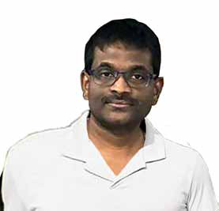
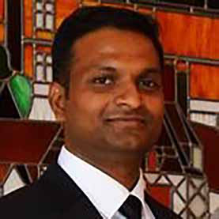
Jaffna Monitor hellojaffnamonitor@gmail.com 27 Former Prime Minister's Secretary, K. Balapatabendi , being welcomed by then LTTE Political Wing Head, S.P. Tamilselvan. Also present are Ravi (extreme left) and Dominic (second from left). LTTE despite being in a relationship, a former comrade jokingly remarked, "He made sure that, even in the LTTE, he wasn't about to be bitten by an ant. This sentiment was echoed by another LTTE leader, who confirmed that Lankeswaran strategically placed himself in the political wing, far from the front lines, ensuring he stayed safe. Another source within LTTE ranks shared a humorous incident to counter Lankeswaran's current chest-thumping war stories often told to naive diaspora Tamils. According to this source, Lankeswaran's commander once discovered that he rarely used his revolver, and to his shock, a bee's nest had formed inside the barrel. "The commander," the source recalled, "was bloody furious!" Following his training, Lankeswaran was appointed as the personal bodyguard to Anjaneyar, a prominent LTTE figure, and head of the political wing in Jaffna. He served in this role through several leadership changes, Anjaneyar Sivarasa's house in Allaveddy
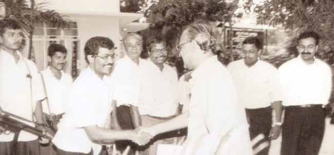
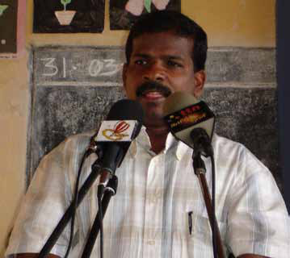
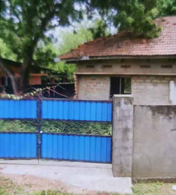
Jaffna Monitor hellojaffnamonitor@gmail.com 28 leadership of Col. Shankar, each LTTE sector was given the opportunity to nominate recruits. From the Jaffna political division, both Lankeswaran and Kushanthan, the LTTE's communications officer at the Kondavil political office—who rose to become the Air Tigers' deputy chief before being arrested by Malaysian police and deported to Sri Lanka in 2014—were selected to join the air force initiative. Other notable figures from Jaffna included Col. Roophan, a Jaffna Hindu College alumnus who became a member of the LTTE Air Tigers' suicide guard and was killed in a kamikaze-style attack on the Sri Lankan Air Force in 2009; Suresh, who went on to marry Achchuthan's sister, Sumithirathevi; and including during Dominic's tenure overseeing the LTTE's political division in Jaffna. When Anjaneyar was later assigned to lead the Makkal Uravu Kolkai Munneduppu (People's Relations and Policy Initiative), a public relations team named by language enthusiast Baby Subramaniyam, Lankeswaran remained by his side. Another senior member from Lankeswaran's unit told Jaffna Monitor that, although Lankeswaran had joined the LTTE, he lacked the fiery passion of a true freedom fighter. Instead, he described him as “just a guy who went around grinning” (Rk;kh rpupr;R nfhz;L ,Ue;jtd;). When the LTTE established its air force division under the LTTE leader Velupillai Prabhakaran holding a child, with Col. Shankar, founder of the LTTE's air wing, standing to his right. A rare moment as Prabhakaran and his wife Mathivathani grace the wedding of Kushanthan and Rohini—Rohini, the stepdaughter of Col. Shankar and daughter of Kuha Akka, a close confidante of Mathivathani, tragically lost in May 2009.
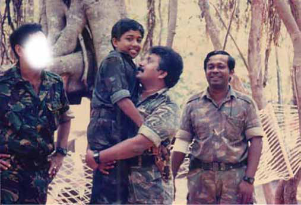
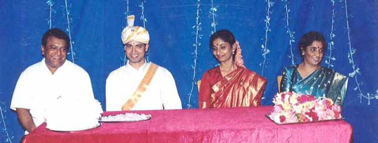
Jaffna Monitor hellojaffnamonitor@gmail.com 29 airstrip buildings. While Lankeswaran's wife, Suganthiny, and their two daughters obtained visas for France, he was unable to do so. French authorities placed him on an exclusion list—a designation reserved for individuals deemed security risks or potential threats to public order. Additionally, his name appeared on an Interpol watch list, further prompting French authorities to deny his visa due to these security concerns. Another key ally within Achchuthan's network is his youngest brother, Rajaputhiran. Described by sources familiar with him as a rough, emotionless individual and a computer expert, Rajaputhiran was born on September 17, 1982, in Jaffna and now resides at 27 Allée de la Loire, Saint- Pathus (Seine-et-Marne), France. He was an LTTE member who served in the political division and trained under S. P. Thamilselvan, the then-head of the LTTE political wing. Known within LTTE ranks by the alias "Bharathi," he was the second in the family to undergo formal training (we apologize for mistakenly reporting him as a non-LTTE member in our previous issue). Rajaputhiran was wounded in the final stages of the war, and credible sources suggest that he did not surrender to the military. Instead, they report that, due to his injuries, he was transported from an ICRC ship into an army-controlled area, where he registered as a civilian. Following the brutal end of the war, he subsequently escaped to France. Rajaputhiran now holds permanent residency in both the UK and France. Primarily residing in the UK, he is actively involved in his brother's syndicate and is married to a French citizen. Samraj, a relative of Achchuthan now residing in London, known for a battle injury that left him with speech difficulties. Though Lankeswaran did not undergo formal pilot training, sources report that he pursued studies in aerospace engineering in Thailand and Malaysia, bringing valuable technical expertise to the LTTE's air operations. Sources say that Lankeswaran's wife, Suganthiny, was also one of the engineers involved in drafting plans for the LTTE's Col. Roophan Road leading to Lankeswaran's house in France
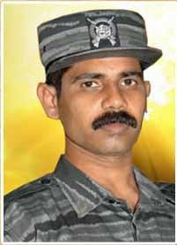
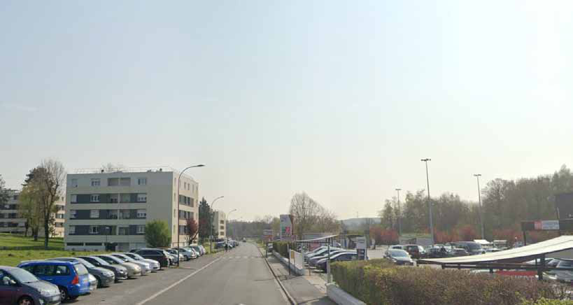
Jaffna Monitor hellojaffnamonitor@gmail.com 30 While their parents lived with Achchuthan's younger sister, Sumithirathevi, also known as Sumithi, sources indicate that Achchuthan frequently traveled to London. There, he met with Dr. Vaman—one of his key operatives—and his brother-in-law, Pugalenthi, who is reportedly hiding in London. Credible sources within the LTTE administration told Jaffna Monitor that during the peacetime in the early 2000s, Achchuthan and his family members obtained land from the LTTE and built houses near the LTTE's court in Kilinochchi, which now functions as the Kilinochchi court. Land was allocated for both Achchuthan and his sister, Arunmozhi, and they constructed houses on these plots. Sources indicate that another plot was allocated in the name of Suganthiny— Lankeswaran's wife—near their property. Credible sources from the Kilinochchi Land Department confirm that these lands, initially allocated by the LTTE, remain registered under the original owners. It is reported that when Achchuthan's sister Arunmozhi visited Sri Lanka last year, she went to inspect this property. A former LTTE fighter expressed his frustration to Jaffna Monitor, stating, "While thousands of former fighters have no land and live in utter poverty, these people live lavishly in France yet still hold onto their land here." Map showing the locations of Achchuthan and his sister Arunmozhi's land near the Kilinochchi District Court. Arunmozhi, former LTTE High Court Judge, with her husband
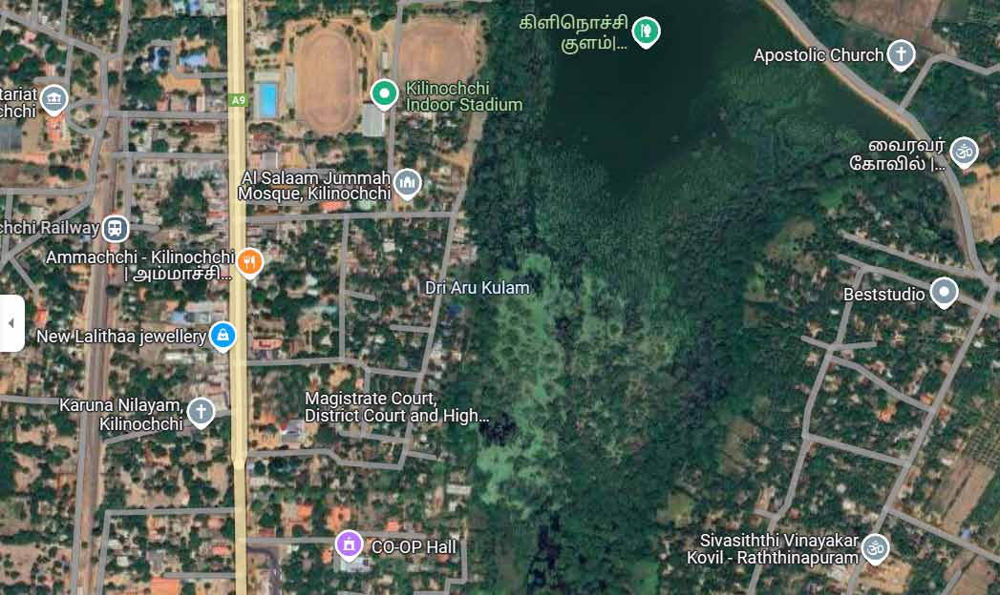
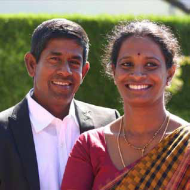